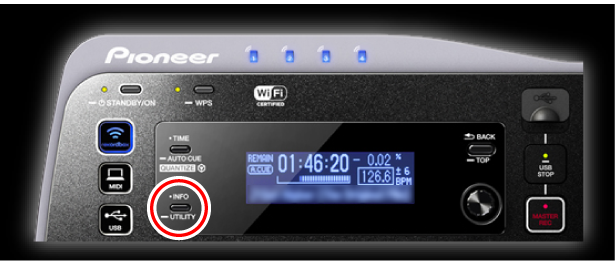

Дополнительная информация
XDJ-AERO Руководство по подключению
Для установки связи между мобильным устройством и XDJ-AERO, сначала требуется проверить SSID и пароль XDJ-AERO.
Перед использованием XDJ-AERO внимательно прочтите брошюру “Прочитайте перед использованием” и “Инструкции по эксплуатации” на CD-ROM, прилагающемся к XDJ-AERO.
1При нажатии кнопки [INFO/UTILITY] на XDJ-AERO более 1 секунды, на дисплее основного блока XDJ-AERO отображается [UTILITY].

2Вращая поворотный регулятор на XDJ-AERO, выберите [WLAN INFORMATION], затем нажмите поворотный регулятор.

3Вращая поворотный регулятор XDJ-AERO, выберите [SSID], затем нажмите поворотный регулятор и отобразите SSID XDJ-AERO.

4Нажмите кнопку [BACK/TOP] на XDJ-AERO и возвратитесь на предыдущий дисплей.
5Вращая поворотный регулятор XDJ-AERO, выберите [PASSWORD], затем нажмите поворотный регулятор и отобразите пароль XDJ-AERO.

6Откройте экран настроек Wi-Fi мобильного устройства, прикоснитесь к SSID XDJ-AERO, затем введите пароль.

7Запустите rekordbox на мобильном устройстве, затем прикоснитесь к [Load] в главном меню.

После установки подключения между rekordbox и XDJ-AERO высвечивается индикатор в верхней левой части XDJ-AERO.